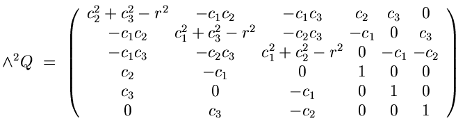

The Discrepancy
8
The Bézout number is not correct when there are 3 or 4 spheres.
We have two (roughly) equivalent explanations.
I.
The tangency equations are `sparse'.
II.
The equations have excess intersection.
I.
If
Q
is the quadratic form for a sphere with center (
c
1
,
c
2
,
c
3
) and radius
r
, then

The 3x3 identity matrix in the lower right corner shows that the tangency equations
= 0
are `sparse', and so we expect fewer solutions than the Bézout number.